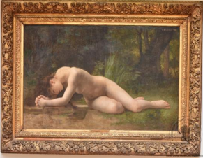

1. বিবলিস

১৮৮৪, ফ্রান্স, ডব্লিউ. এ. বুগেরো কর্তৃক নির্মিত।
এটি বিবলিসের একটি চমৎকার চিত্রকর্ম—বিবলিস ছিলেন মিলেতাসের কন্যা এবং একজন অপ্সরা। বিবলিস তার যমজ ভাই ক্যামুসের প্রেমে পড়েছিলেন। চিত্রকর্মটিতে একজন নগ্ন নারীকে মাটিতে বসে থাকতে দেখা যায়, যিনি কনুইয়ের ওপর ভর দিয়ে মেঝের দিকে নিচু হয়ে তাকিয়ে আছেন। এর ওপরের বাঁ দিকে খোদাই করে লেখা রয়েছে — ডব্লিউ. এ. বুগেরো - ১৮৮৪।
বুগেরোর আঁকা চমৎকার ক্যানভাস 'বিবলিস' জাদুঘরটির এক অমূল্য সম্পদ। ফরাসি চিত্রশিল্পী বুগেরো তাঁর চিত্রকর্মে নারী সৌন্দর্যের সূক্ষ্ম প্রকাশ, ছবির মসৃণতা এবং অবয়বের নিখুঁত লালিত্যের জন্য অত্যন্ত প্রশংসিত ছিলেন। তাঁর পরিণত বয়সের সৃষ্টি এই 'বিবলিস' চিত্রকর্মটি জাদুঘরের একটি অন্যতম নিদর্শন, যাতে শিল্পীর স্বাক্ষর এবং তারিখ (১৮৮৪) খোদাই করা এই মনোমুগ্ধকর শিল্পকর্মে বিবলিসের জীবনের এক গুরুত্বপূর্ণ মুহূর্তকে তুলে ধরা হয়েছে। বিবলিস ছিলেন এক অপ্সরা। ক্রিটের মিলেতাসের কন্যা বিবলিস তাঁর যমজ ভাই ক্যামুসের প্রেমে পড়েছিলেন—কাহিনি অনুসারে এমনটাই জানা যায়। কিন্তু ক্যামুস তাঁর ভালোবাসার প্রতিদান না দিয়ে বিবলিসের কাছ থেকে পালিয়ে যান। ভাইয়ের প্রতি এই দুর্ভাগ্যজনক প্রেমকে সংবরণ করতে না পেরে বিবলিস অবশেষে একটি পর্বতের চূড়া থেকে ঝাঁপ দিয়ে আত্মহত্যার চেষ্টা করেন। কিন্তু বিবলিসের এই করুণ পরিণতিতে দুঃখিত হয়ে অপ্সরারা তাঁকে অমরত্ব দান করেন এবং হামাদ্রায়াদ নামে নিজেদের সমাজে গ্রহণ করেন। তবে অন্য একটি কাহিনি অনুসারে, পলায়নরত ভাইয়ের পিছু ধাওয়া করতে করতে চরম ক্লান্ত হয়ে বিবলিস শোকে বিহ্বল হয়ে মাটিতে লুটিয়ে পড়েন এবং মুহূর্তের মধ্যেই একটি ঝরনায় রূপান্তরিত হন। এই কাহিনি এবং এর নিহিত নীতিশিক্ষার চেয়েও আমাদের বেশি আকৃষ্ট করে বিবলিসের অনির্বচনীয় সৌন্দর্য। অত্যন্ত নিপুণভাবে নির্মিত তাঁর দেহাবয়ব মুহূর্তেই দর্শকের দৃষ্টি আকর্ষণ করে। উষ্ণ সোনালি আভায় রঞ্জিত ত্বকের কোমল ও সজীব আবেদন শিল্পী অসাধারণ দক্ষতায় ফুটিয়ে তুলেছেন। মূর্তিটির অবয়ব অত্যন্ত সুচারুভাবে অঙ্কিত এবং বৈজ্ঞানিক নির্ভুলতার সঙ্গে পরিপূর্ণতা লাভ করেছে।
বুগেরোর আঁকা চমৎকার ক্যানভাস 'বিবলিস' জাদুঘরটির এক অমূল্য সম্পদ। ফরাসি চিত্রশিল্পী বুগেরো তাঁর চিত্রকর্মে নারী সৌন্দর্যের সূক্ষ্ম প্রকাশ, ছবির মসৃণতা এবং অবয়বের নিখুঁত লালিত্যের জন্য অত্যন্ত প্রশংসিত ছিলেন। তাঁর পরিণত বয়সের সৃষ্টি এই 'বিবলিস' চিত্রকর্মটি জাদুঘরের একটি অন্যতম নিদর্শন, যাতে শিল্পীর স্বাক্ষর এবং তারিখ (১৮৮৪) খোদাই করা এই মনোমুগ্ধকর শিল্পকর্মে বিবলিসের জীবনের এক গুরুত্বপূর্ণ মুহূর্তকে তুলে ধরা হয়েছে। বিবলিস ছিলেন এক অপ্সরা। ক্রিটের মিলেতাসের কন্যা বিবলিস তাঁর যমজ ভাই ক্যামুসের প্রেমে পড়েছিলেন—কাহিনি অনুসারে এমনটাই জানা যায়। কিন্তু ক্যামুস তাঁর ভালোবাসার প্রতিদান না দিয়ে বিবলিসের কাছ থেকে পালিয়ে যান। ভাইয়ের প্রতি এই দুর্ভাগ্যজনক প্রেমকে সংবরণ করতে না পেরে বিবলিস অবশেষে একটি পর্বতের চূড়া থেকে ঝাঁপ দিয়ে আত্মহত্যার চেষ্টা করেন। কিন্তু বিবলিসের এই করুণ পরিণতিতে দুঃখিত হয়ে অপ্সরারা তাঁকে অমরত্ব দান করেন এবং হামাদ্রায়াদ নামে নিজেদের সমাজে গ্রহণ করেন। তবে অন্য একটি কাহিনি অনুসারে, পলায়নরত ভাইয়ের পিছু ধাওয়া করতে করতে চরম ক্লান্ত হয়ে বিবলিস শোকে বিহ্বল হয়ে মাটিতে লুটিয়ে পড়েন এবং মুহূর্তের মধ্যেই একটি ঝরনায় রূপান্তরিত হন। এই কাহিনি এবং এর নিহিত নীতিশিক্ষার চেয়েও আমাদের বেশি আকৃষ্ট করে বিবলিসের অনির্বচনীয় সৌন্দর্য। অত্যন্ত নিপুণভাবে নির্মিত তাঁর দেহাবয়ব মুহূর্তেই দর্শকের দৃষ্টি আকর্ষণ করে। উষ্ণ সোনালি আভায় রঞ্জিত ত্বকের কোমল ও সজীব আবেদন শিল্পী অসাধারণ দক্ষতায় ফুটিয়ে তুলেছেন। মূর্তিটির অবয়ব অত্যন্ত সুচারুভাবে অঙ্কিত এবং বৈজ্ঞানিক নির্ভুলতার সঙ্গে পরিপূর্ণতা লাভ করেছে।